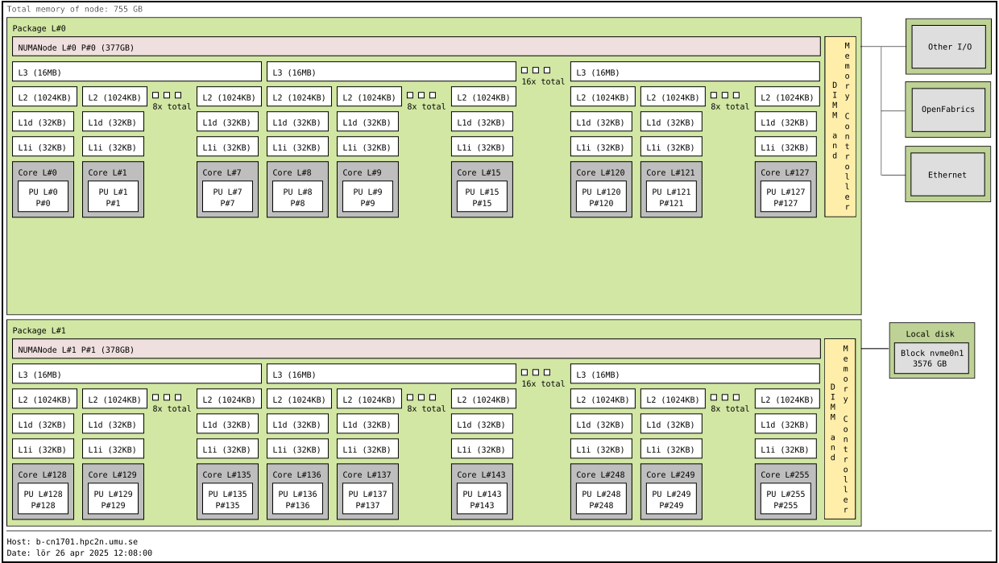

Using GPUs¶
Questions
- What is GPU acceleration?
- How to enable GPUs?
- How to deploy GPUs at HPC2N, UPPMAX, LUNARC, NSC, PDC and C3SE?
Objectives
- Get an intro to common schemes for GPU code acceleration
- Learn about the GPU nodes at HPC2N, UPPMAX, LUNARC, NSC, PDC, and C3SE
- Learn how to make a batch script asking for GPU nodes at HPC2N, UPPMAX, LUNARC, NSC, PDC, and C3SE
Introduction¶
In order to understand the capabilities of a GPU, it is instructive to compare a pure CPU architecture with a GPU based architecture. Here, there is a schematics of the former:

Pure CPU architecture (single node). In the present case there are 256 cores, each with its own cache memory (LX). There is a shared memory (~378 GB/NUMA node) for all these cores. This is an AMD Zen4 node.
The base frequency is 2.25 GHz, but it can boost up to 3.1 GHz.
As for the GPU architecture, a GPU card of type Ada Lovelace (like the L40s) looks like this:

Note: The AD102 GPU also includes 288 FP64 Cores (2 per SM) which are not depicted in the above diagram. The FP64 TFLOP rate is 1/64th the TFLOP rate of FP32 operations. The small number of FP64 Cores are included to ensure any programs with FP64 code operate correctly, including FP64 Tensor Core code.
This is a single GPU engine of a L40s card. There are 12 Graphics Processing Clusters (GPCs), 72 Texture Processing Clusters (TPCs), 144 Streaming Multiprocessors (SMs), and a 384-bit memory interface with 12 32-bit memory controllers).
On the diagram, each green dot represents a CUDA core (single precision), while the yellow are RT cores and blue Tensor cores. The cores are arranged in the slots called SMs in the figure. Cores in the same SM share some local and fast cache memory.
GPCs

The GPC is the dominant high-level hardware block. Each GPC includes a dedicated Raster Engine, two Raster Operations (ROPs) partitions, with each partition containing eight individual ROP units, and six TPCs. Each TPC includes one PolyMorph Engine and two SMs.
Each SM contain 128 CUDA Cores, one Ada Third-Generation RT Core, four Ada Fourth-Generation Tensor Cores, four Texture Units, a 256 KB Register File, and 128 KB of L1/Shared Memory, which can be configured for different memory sizes depending on the needs of the graphics or compute workload.
In a typical cluster, some GPUs are attached to a single node resulting in a CPU-GPU hybrid architecture. The CPU component is called the host and the GPU part the device.
One possible layout
Kebnekaise, AMD Zen4 node with L40s GPU

Schematics of a hybrid CPU-GPU architecture. A GPU L40s card is attached to a NUMA island which in turn contains 24 cores (AMD Zen4 CPU node with 48 cores total). The NUMA island and the GPUs are connected through a PCI-E interconnect which makes the data transfer between both components rather slow.
We can characterize the CPU and GPU performance with two quantities: the latency and the throughput.
- Latency refers to the time spent in a sole computation.
- Throughput denotes the number of computations that can be performed in parallel. Then, we can say that a CPU has low latency (able to do fast computations) but low throughput (only a few computations simultaneously).
In the case of GPUs, the latency is high and the throughput is also high. We can visualize the behavior of the CPUs and GPUs with cars as in the figure below. A CPU would be compact road where only a few racing cars can drive whereas a GPU would be a broader road where plenty of slow cars can drive.

Cars and roads analogy for the CPU and GPU behavior. The compact road is analogous to the CPU (low latency, low throughput) and the broader road is analogous to the GPU (high latency, high throughput).
Not every program is suitable for GPU acceleration. GPUs process simple functions rapidly, and are best suited for repetitive and highly-parallel computing tasks. GPUs were originally designed to render high-resolution images and video concurrently and fast, but since they can perform parallel operations on multiple sets of data, they are also often used for other, non-graphical tasks. Common uses are machine learning and scientific computation were the GPUs can take advantage of massive parallelism.
- Many R packages are not CUDA aware, but some have been written specifically with GPUs in mind.
- Many Julia packages are not CUDA aware. The CUDA.jl package is the main programming interface for working with Nvidia GPUs.
- Matlab does have support for computing on GPUs, but you need to write functions that support GPU execution. Many functions in Matlab run automatically on a GPU if you supply a gpuArray data argument. GPU computing in MATLAB requires Parallel Computing Toolbox. Information here: Run MATLAB Functions on a GPU.
One of the most common use of GPUs with and Julia is for machine learning or deep learning.
GPUs on C3SE, UPPMAX, HPC2N, LUNARC, NSC, and PDC systems¶
There are generally either not GPUs on the login nodes or they cannot be accessed for computations. To use them you need to either launch an interactive job or submit a batch job.
Alvis is meant for GPU jobs. There is no node-sharing on multi-node jobs (--exclusive is automatic).
NOTE: Requesting -N 1 does not mean 1 full node
You would need to add this to your batch script:
where <type> is one of
- V100
- T4
- A100
and x is number of GPU cards
- 1-4 for V100
- 1-8 for T4
- 1-4 for A100
Tetralith has Nvidia T4 GPUs. In order to access them, add this to your batch script or interactive job:
Dardel has AMD Instinct™ MI250X GPU chips. In order to access them, add this to your batch script or interactive job:
You need to add this to your batch script (or interactive job) in order to use them:
NOTE: the fact that Dardel has AMD GPUs means that CUDA-enabled packages will not run! You need something like hip.
Rackham’s compute nodes do not have GPUs. You need to use Snowy for that. The new cluster Pelle has GPUs.
On Pelle, you need to use this batch command:
- for L40s GPUs (up to 10 GPU cards)
or for H100 GPUs (up to 2 GPU cards)
Kebnekaise’s GPU nodes are considered a separate resource, and the regular compute nodes do not have GPUs.
Kebnekaise has a great many different types of GPUs:
- V100 (2 cards/node)
- A40 (8 cards/node)
- A6000 (2 cards/node)
- L40s (2 or 6 cards/node)
- A100 (2 cards/node)
- H100 (4 cards/node)
- MI100 (2 cards/node)
To access them, you need to use this to the batch system:
where x is the number of GPU cards you want. Above are given how many are on each type, so you can ask for up to that number.
In addition, you need to add this to the batch system:
where type is
- v100
- a40
- a6000
- l40s
- a100
- h100
- mi100
For more information, see HPC2N’s guide to the different parts of the batch system: https://docs.hpc2n.umu.se/documentation/batchsystem/resources/
LUNARC has Nvidia A100 GPUs and Nvidia A40 GPUs, but the latter ones are reserved for interactive graphics work on the on-demand system, and Slurm jobs should not be submitted to them.
Thus in order to use the A100 GPUs on Cosmos, add this to your batch script:
A100 GPUs on AMD nodes:
These nodes are configured as exclusive access and will not be shared between users. User projects will be charged for the entire node (48 cores). A job on a node will also have access to all memory on the node.
A100 GPUs on Intel nodes:
where <number> is 1 or 2 (Two of the nodes have 1 GPU and two have 2 GPUs).
Deploying GPUs¶
As mentioned, you need a batch job or an interactive job (could also be through Open OnDemand or from inside MATLAB) to use the GPUs.
R¶
Here follows an example of a batch script that allocates GPUs. This is for an R job, but it is done similarly for Julia and Matlab.
#!/bin/bash
# Remember to change this to your own project ID after the course!
#SBATCH -A naiss2025-22-934
# Asking for runtime: hours, minutes, seconds. At most 1 week
#SBATCH --time=HHH:MM:SS
# Ask for resources, including GPU resources
#SBATCH -n 1
#SBATCH -c 32
#SBATCH --gpus-per-task=1
# Remove any loaded modules and load the ones we need
module purge > /dev/null 2>&1
module load R/4.4.0-hpc1-gcc-11.3.0-bare
R --no-save --no-restore -f MY-R-GPU-SCRIPT.R
#!/bin/bash -l
# Remember to change this to your own project ID after the course!
#SBATCH -A naiss2025-22-934
# Asking for runtime: hours, minutes, seconds. At most 1 week
#SBATCH --time=HHH:MM:SS
# Ask for resources, including GPU resources
#SBATCH -N 1
#SBATCH --ntasks-per-node=1
#SBATCH -p gpu
module load PDC/23.12 R/4.4.1-cpeGNU-23.12
module load rocm/5.7.0
#module load craype-accel-amd-gfx90a
#module load cpeGNU/23.12
R --no-save --no-restore -f MY-R-GPU-SCRIPT.R
Rackham/Snowy:
#!/bin/bash -l
#SBATCH -A uppmax2025-Y-ZZZ
#Asking for runtime: hours, minutes, seconds. At most 1 week
#SBATCH -t HHH:MM:SS
#SBATCH --exclusive
#SBATCH -p node
#SBATCH -N 1
#SBATCH -M snowy
#SBATCH --gpus=1
#SBATCH --gpus-per-node=1
#Writing output and error files
#SBATCH --output=output%J.out
#SBATCH --error=error%J.error
ml purge > /dev/null 2>&1
ml uppmax R/4.1.1 R_packages/4.1.1
R --no-save --no-restore -f MY-R-GPU-SCRIPT.R
Pelle (1 L40s):
#!/bin/bash -l
#SBATCH -A uppmax2025-Y-ZZZ
#Asking for runtime: hours, minutes, seconds. At most 1 week
#SBATCH -t HHH:MM:SS
#SBATCH -p gpu
#SBATCH --gpus:l40s:1
#Writing output and error files
#SBATCH --output=output%J.out
#SBATCH --error=error%J.error
ml purge > /dev/null 2>&1
# Reloading a module that got removed with purge
ml Java/17
ml R/4.4.2-gfbf-2024a R-bundle-CRAN/2024.11-foss-2024a R-bundle-Bioconductor/3.20-foss-2024a-R-4.4.2
R --no-save --no-restore -f MY-R-GPU-SCRIPT.R
#!/bin/bash
#SBATCH -A hpc2n2025-151 # Change to your own project ID
#Asking for runtime: hours, minutes, seconds. At most 1 week
#SBATCH -t HHH:MM:SS
#Ask for GPU resources. You pick type as one of the ones shown above
#x is how many cards you want, at most as many as shown above
#SBATCH --gpus:x
#SBATCH -C type
#Writing output and error files
#SBATCH --output=output%J.out
#SBATCH --error=error%J.error
ml purge > /dev/null 2>&1
#R version 4.4.1
ml GCC/13.2.0 R/4.4.1 OpenMPI/4.1.6 R-bundle-CRAN/2024.06
ml CUDA/12.6.0
R --no-save --no-restore -f MY-R-GPU-SCRIPT.R
#!/bin/bash
# Remember to change this to your own project ID after the course!
#SBATCH -A lu2025-2-94
# Asking for runtime: hours, minutes, seconds. At most 1 week
#SBATCH --time=HHH:MM:SS
# Ask for GPU resources - x is how many cards, 1 or 2
#SBATCH -p gpua100
#SBATCH --gres=gpu:x
# Remove any loaded modules and load the ones we need
module purge > /dev/null 2>&1
module load GCC/11.3.0 OpenMPI/4.1.4 R/4.2.1 CUDA/12.1.1
R --no-save --no-restore -f MY-R-GPU-SCRIPT.R
MATLAB¶
Here we cover how to use GPUs with MATLAB
- Inside MATLAB
- In a batch script
In order to use GPUs, you have to ask for them.
Inside MATLAB¶
In order to use GPUs from inside MATLAB, you must add them as additional properties to your profile.
This is done the same whether you use MATLAB on the command line or inside the GUI. If you work inside the GUI it is also possible to set these GPU values in the Cluster Profile Manager.
Remember, after it is saved to your profile it will use GPUs again next time you submit a job, even if you don’t want GPUs there. To reset this, do:
This is how you add GPUs to use in batch jobs submitted from inside MATLAB:
Important
Ask for a GPU and enough time to do what you need.
Load MATLAB
Then run MATLAB either as GUI…
…Or on the terminal
Finally, inside MATLAB, add this to your profile (remember the c=parcluster; after you start MATLAB again, to get a handle):
Load and start MATLAB, then do (remember the c=parcluster; after you start MATLAB again, to get a handle)
c.AdditionalProperties.GpuCard = 'card-type';
c.AdditionalProperties.GpusPerNode = '#gpus';
c.saveProfile
where card-type is one of v100, a40, a6000, l40s, a100, h100, or mi100, and #gpus depends on the card-type:
- V100 (2 cards/node)
- A40 (8 cards/node)
- A6000 (2 cards/node)
- L40s (2 or 6 cards/node)
- A100 (2 cards/node)
- H100 (4 cards/node)
- MI100 (2 cards/node)
Load and start MATLAB, then do (remember the c=parcluster; after you start MATLAB again, to get a handle)
where #GPUs is 1 or 2.
Load and start MATLAB, then do (remember the c=parcluster; after you start MATLAB again, to get a handle)
where #GPUs is 1 or 2.
Remember, here you cannot set AdditionalProperties. Instead, you do the following:
- Start an interactive session on the GPU partition:
salloc -N 1 --ntasks-per-node=1 --t 1:00:00 -A naiss2025-22-262 -p gpu - Load MATLAB:
module load PDCOLD/23.12 matlab/r2024a-ps - Start MATLAB:
matlab -nodisplay -nodesktop -nosplash
You are now ready to run your GPU MATLAB scripts.
Remember, here you cannot set AdditionalProperties. Instead, you do the following:
- Start am interactive sesson asking for a GPU:
srun --account=naiss2025-22-934 --gpus-per-node=T4:1 --time=01:00:00 --pty /bin/bash - Load MATLAB:
module load MATLAB/2024b - Start MATLAB:
matlab -singleCompThread -nodisplay -nosplash -nodesktop
Challenge 5. Add/remove GPUs in your cluster profile
Try to add GPUs to your cluster profile and save it. Run c.AdditionalProperties to see what was added. Then do c.AdditionalProperties.GpusPerNode = ''; to remove it. See that it was removed.
Matlab with GPUs in batch scripts¶
How to request a GPU node varies somewhat between clusters. Refer to the following templates:
#!/bin/bash
# Change to your actual project number
#SBATCH -A naiss2025-22-360
#SBATCH -p gpu
#SBATCH --gpus:l40s:1
# Asking for 30 min (change as you want)
#SBATCH -t 00:30:00
#SBATCH --error=matlab_%J.err
#SBATCH --output=matlab_%J.out
# Change depending on resource and MATLAB version
# to find out available versions: module spider MATLAB
module add MATLAB/2024a
# Executing a GPU matlab program
matlab -nodisplay -nosplash -r "gpu-matlab-script.m"
#!/bin/bash
# Change to your actual project number
#SBATCH -A hpc2n2025-151
#SBATCH -n 1
#SBATCH --gpus=<#gpus>
#SBATCH -C <gpu-type>
# Asking for 30 min (change as you want)
#SBATCH -t 00:30:00
#SBATCH --error=matlab_%J.err
#SBATCH --output=matlab_%J.out
# Clean the environment
module purge > /dev/null 2>&1
# Change depending on resource and MATLAB version
# to find out available versions: module spider matlab
module load MATLAB/2023a.Update4
# Executing a GPU matlab program
matlab -nodisplay -nosplash -r "gpu-matlab-script.m"
where card-type is one of v100, a40, a6000, l40s, a100, h100, or mi100, and #gpus depends on the card-type:
- V100 (2 cards/node)
- A40 (8 cards/node)
- A6000 (2 cards/node)
- L40s (2 or 6 cards/node)
- A100 (2 cards/node)
- H100 (4 cards/node)
- MI100 (2 cards/node)
#!/bin/bash
# Change to your actual project number
#SBATCH -A lu2025-7-94
#SBATCH -n 1
#SBATCH -p gpua100
# The number of GPUs.#gpus, can be 1 or 2
#SBATCH --gpus=<#gpus>
# Asking for 30 min (change as you want)
#SBATCH -t 00:30:00
#SBATCH --error=matlab_%J.err
#SBATCH --output=matlab_%J.out
# Clean the environment
module purge > /dev/null 2>&1
# Change depending on resource and MATLAB version
# to find out available versions: module spider matlab
module load matlab/2023b
# Executing a GPU matlab program
matlab -nodisplay -nosplash -r "gpu-matlab-script.m"
#!/bin/bash
# Change to your actual project number
#SBATCH -A naiss2025-22-934
#SBATCH --ntasks=1
#SBATCH --cpus-per-task=1
#SBATCH --ntasks-per-core=1
# The number of GPUs.#gpus, can be 1 or 2
#SBATCH --gpus-per-task=1
# Asking for 30 min (change as you want)
#SBATCH -t 00:30:00
#SBATCH --error=matlab_%J.err
#SBATCH --output=matlab_%J.out
# Clean the environment
module purge > /dev/null 2>&1
# Change depending on resource and MATLAB version
# to find out available versions: module spider matlab
module load MATLAB/2024a-hpc1-bdist
# Executing a GPU matlab program
matlab -singleCompThread -nodisplay -nosplash -r "gpu-matlab-script.m"
#!/bin/bash
# Change to your actual project number
#SBATCH -A naiss2025-22-934
#SBATCH --ntasks-per-node=1
#SBATCH -N 1
# Ask for GPUs
#SBATCH -p gpu
# Asking for 30 min (change as you want)
#SBATCH -t 00:30:00
#SBATCH --error=matlab_%J.err
#SBATCH --output=matlab_%J.out
# Clean the environment
module purge > /dev/null 2>&1
# Change depending on resource and MATLAB version
# to find out available versions: module spider matlab
module load PDC/24.11 matlab/r2024b rocm/5.7.0
# Executing a GPU matlab program
matlab -singleCompThread -nodisplay -nosplash -r "gpu-matlab-script.m"
#!/bin/bash
# Remember to change this to your own project ID after the course!
#SBATCH -A NAISS2025-22-934
#SBATCH -t 00:30:00
#SBATCH -p alvis
#You always need to ask for GPUs on Alvis! And you should not use it for anything but GPU jobs!
#SBATCH -N 1 --gpus-per-node=T4:1
ml purge > /dev/null 2>&1
module load MATLAB/2024b
matlab -singleCompThread -nodisplay -nosplash -r "gpu-matlab-script.m"
Julia¶
In order to use the NVIDIA GPUs with Julia (UPPMAX, HPC2N, and LUNARC), you will need to load a CUDA toolkit module on the
cluster and install the CUDA package in Julia.
In the case of AMD GPUs for Julia (PDC and HPC2N), you will need to load a ROCM toolkit module on the
cluster and install the AMDGPU package in Julia as in the next sequence of commands.
Prerequisites
- This can only be done on Snowy or Bianca.
- Then either create an interactive session or make a batch job
-
CUDA is installed at system level so they do not need to be loaded.
-
On snowy
$ interactive -A <proj> -n 1 -c 32 --gpus-per-task=1 -t 1:00:00
$ ml buildenv-gcccuda/11.6.2-gcc9-hpc1 # Load tool chain with CUDA
$ ml julia/1.9.4-bdist # Julia version
$ julia
(v1.9) pkg> add LinearAlgebra
(v1.9) pkg> add CUDA
Updating registry at `~/.julia/registries/General.toml`
Resolving package versions...
...
Once this initial setting is completed, you will be able to use the GPUs available on the
cluster. Here, there is a simple example for computing a matrix-matrix multiplication. As a
reference point, we show the simulation on CPUs as well. You can call the batch script job-gpu.sh,
for instance.
Running on NVIDIA GPUs
Short GPU example for running on Snowy.
#!/bin/bash -l
#SBATCH -A naiss202t-uv-wxyz # your project_ID
#SBATCH -M snowy
#SBATCH -p node
#SBATCH --gres=gpu:1
#SBATCH -N 1
#SBATCH --job-name=job-gpu # create a short name for your job
#SBATCH --time=00:15:00 # total run time limit (HH:MM:SS)
#SBATCH --qos=short # if test run t<15 min
#SBATCH --mail-type=begin # send email when job begins
#SBATCH --mail-type=end # send email when job ends
module load julia/1.8.5 # system CUDA works as of today
julia script-gpu.jl
#!/bin/bash
#SBATCH -A hpc2n202w-xyz # your project_ID
#SBATCH -J job-gpu # name of the job
#SBATCH -n 1 # nr. tasks
#SBATCH --time=00:03:00 # requested time
#SBATCH --error=job.%J.err # error file
#SBATCH --output=job.%J.out # output file
#SBATCH --gres=gpu:v100:1 # 1 GPU v100 card
ml purge > /dev/null 2>&1
ml Julia/1.8.5-linux-x86_64
ml CUDA/11.4.1
julia script-gpu.jl
#!/bin/bash
#SBATCH -A lu202w-x-yz # your project_ID
#SBATCH -J job-gpu # name of the job
#SBATCH -n 1 # nr. tasks
#SBATCH --time=00:03:00 # requested time
#SBATCH --error=job.%J.err # error file
#SBATCH --output=job.%J.out # output file
#Asking for one A100 GPU
#SBATCH -p gpua100
#SBATCH --gres=gpu:1
ml purge > /dev/null 2>&1
ml Julia/1.8.5-linux-x86_64
ml CUDA/11.4.1
julia script-gpu.jl
#!/bin/bash
#SBATCH -A naiss202t-uv-wxyz # your project_ID
#SBATCH -J job-gpu # name of the job
#SBATCH -n 1 # nr. tasks
#SBATCH -c 32 # nr. cores
#SBATCH --gpus-per-task=1 # nr. GPU cards
#SBATCH --time=00:04:00 # requested time
#SBATCH --error=job.%J.err # error file
#SBATCH --output=job.%J.out # output file
ml buildenv-gcccuda/11.6.2-gcc9-hpc1
ml julia/1.9.4-bdist
julia script-gpu.jl
Running on AMD GPUs
#!/bin/bash
#SBATCH -A naiss202t-uv-wxyz # your project_ID
#SBATCH -J job # name of the job
#SBATCH -p gpu # name of the queue
#SBATCH --ntasks=1 # nr. of tasks
#SBATCH --cpus-per-task=1 # nr. of cores per-task
#SBATCH --time=00:03:00 # requested time
#SBATCH --error=job.%J.err # error file
#SBATCH --output=job.%J.out # output file
# Load dependencies and Julia version
ml PDC/23.12 julia/1.10.2-cpeGNU-23.12
# ROCM toolkit module
ml rocm/5.7.0 craype-accel-amd-gfx90a
julia script-gpu.jl
Julia AMD GPU example code.
using AMDGPU
AMDGPU.versioninfo() # Display AMD GPU information
N = 2^8
x = rand(N, N)
y = rand(N, N)
A = ROCArray(x) # Transfer data to AMD GPU
B = ROCArray(y)
# Calculation on CPU
@time x * y
# Calculation on AMD GPU
@time A * B
# Calculation on CPU (again)
@time x * y
# Calculation on AMD GPU (again)
@time A * B
Julia Exercises¶
Exercise 1. Run the GPU script
Run the following script script-gpu.jl. Why are we running the simulations
twice?
Note that at UPPMAX you will need a project will access to Snowy. Remember that at PDC
we will use AMD GPUs.
Answer
This batch script is for Kebnekaise. We run the simulation twice because in this way, the reported time is more reliable for the computing time as in the first simulation, data transfer and other settings could be added to the reported time.
#!/bin/bash
#SBATCH -A hpc2n202w-xyz # your project_ID
#SBATCH -J job-serial # name of the job
#SBATCH -n 1 # nr. tasks
#SBATCH --time=00:03:00 # requested time
#SBATCH --error=job.%J.err # error file
#SBATCH --output=job.%J.out # output file
#SBATCH --gres=gpu:v100:1 # 1 GPU v100 card
ml purge > /dev/null 2>&1
ml Julia/1.8.5-linux-x86_64
ml CUDA/11.4.1
julia script-gpu.jl
Output:
0.689096 seconds (2.72 M allocations: 132.617 MiB, 6.27% gc time, 99.62% compilation time)
1.194153 seconds (1.24 M allocations: 62.487 MiB, 3.41% gc time, 55.13% compilation time)
0.000933 seconds (2 allocations: 512.047 KiB)
0.000311 seconds (5 allocations: 192 bytes)
This batch script is for UPPMAX. Adding the numbers 2 and 3.
#!/bin/bash -l
#SBATCH -A naiss202t-uv-wxyz # your project_ID
#SBATCH -M snowy
#SBATCH -p node
#SBATCH --gres=gpu:1
#SBATCH -N 1
#SBATCH --job-name=juliaGPU # create a short name for your job
#SBATCH --time=00:15:00 # total run time limit (HH:MM:SS)
#SBATCH --qos=short # if test run t<15 min
ml julia/1.8.5
julia script-gpu.jl
Output:
Downloading artifact: CUDNN
Downloading artifact: CUTENSOR
CUDA toolkit 11.7, artifact installation
NVIDIA driver 525.85.12, for CUDA 12.0
CUDA driver 12.0
Libraries:
- CUBLAS: 11.10.1
- CURAND: 10.2.10
- CUFFT: 10.7.2
- CUSOLVER: 11.3.5
- CUSPARSE: 11.7.3
- CUPTI: 17.0.0
- NVML: 12.0.0+525.85.12
- CUDNN: 8.30.2 (for CUDA 11.5.0)
- CUTENSOR: 1.4.0 (for CUDA 11.5.0)
Toolchain:
- Julia: 1.8.5
- LLVM: 13.0.1
- PTX ISA support: 3.2, 4.0, 4.1, 4.2, 4.3, 5.0, 6.0, 6.1, 6.3, 6.4, 6.5, 7.0, 7.1, 7.2
- Device capability support: sm_35, sm_37, sm_50, sm_52, sm_53, sm_60, sm_61, sm_62, sm_70, sm_72, sm_75, sm_80, sm_86
1 device:
0: Tesla T4 (sm_75, 14.605 GiB / 15.000 GiB available)
0.988437 seconds (2.72 M allocations: 132.556 MiB, 4.72% gc time, 99.10% compilation time)
5.707402 seconds (1.30 M allocations: 65.564 MiB, 0.72% gc time, 19.70% compilation time)
0.000813 seconds (2 allocations: 512.047 KiB)
0.000176 seconds (16 allocations: 384 bytes)
This batch script is for Cosmos.
#!/bin/bash
#SBATCH -A lu202w-x-yz # your project_ID
#SBATCH -J job-serial # name of the job
#SBATCH -n 1 # nr. tasks
#SBATCH --time=00:03:00 # requested time
#SBATCH --error=job.%J.err # error file
#SBATCH --output=job.%J.out # output file
#Asking for one A100 GPU
#SBATCH -p gpua100
#SBATCH --gres=gpu:1
ml purge > /dev/null 2>&1
ml Julia/1.8.5-linux-x86_64
ml CUDA/11.4.1
julia script-gpu.jl
This batch script is for Dardel.
#!/bin/bash
#SBATCH -A naiss202t-uv-wxyz # your project_ID
#SBATCH -J job # name of the job
#SBATCH -p gpu # name of the queue
#SBATCH --ntasks=1 # nr. of tasks
#SBATCH --cpus-per-task=1 # nr. of cores per-task
#SBATCH --time=00:03:00 # requested time
#SBATCH --error=job.%J.err # error file
#SBATCH --output=job.%J.out # output file
# Load dependencies and Julia version
ml PDC/23.12 julia/1.10.2-cpeGNU-23.12
# ROCM toolkit module
ml rocm/5.7.0 craype-accel-amd-gfx90a
julia script-gpu.jl
OUTPUT:
┌───────────┬──────────────────┬─...
│ Available │ Name │ ...
├───────────┼──────────────────┼─...
│ + │ LLD │ ...
│ + │ Device Libraries │ ...
│ + │ HIP │ ...
│ + │ rocBLAS │ ...
│ + │ rocSOLVER │ ...
│ + │ rocSPARSE │ ...
│ + │ rocRAND │ ...
│ + │ rocFFT │ ...
│ + │ MIOpen │ ...
└───────────┴──────────────────┴─...
┌────┬─────────────────────┬─────...
│ Id │ Name │ ...
├────┼─────────────────────┼─────...
│ 1 │ AMD Instinct MI250X │ gfx9...
│ 2 │ AMD Instinct MI250X │ gfx9...
│ 3 │ AMD Instinct MI250X │ gfx9...
│ 4 │ AMD Instinct MI250X │ gfx9...
│ 5 │ AMD Instinct MI250X │ gfx9...
│ 6 │ AMD Instinct MI250X │ gfx9...
│ 7 │ AMD Instinct MI250X │ gfx9...
│ 8 │ AMD Instinct MI250X │ gfx9...
└────┴─────────────────────┴─────...
1.241600 seconds (2.27 M allocations: 152.229 MiB, 8.28% gc time, 91.71% compilation time)
0.604009 seconds (624.95 k allocations: 38.360 MiB, 68.01% compilation time)
0.001051 seconds (2 allocations: 512.047 KiB)
0.000077 seconds (13 allocations: 352 bytes)
This batch script is for NSC.
#!/bin/bash
#SBATCH -A naiss202t-uv-wxyz # your project_ID
#SBATCH -J job-gpu # name of the job
#SBATCH -n 1 # nr. tasks
#SBATCH -c 32 # nr. cores
#SBATCH --gpus-per-task=1 # nr. GPU cards
#SBATCH --time=00:04:00 # requested time
#SBATCH --error=job.%J.err # error file
#SBATCH --output=job.%J.out # output file
ml buildenv-gcccuda/11.6.2-gcc9-hpc1
ml julia/1.9.4-bdist
julia script-gpu.jl
Summary
- GPUs process simple functions rapidly, and are best suited for repetitive and highly-parallel computing tasks
- There are GPUs on NSC/Tetralith, PDC/Dardel, C3SE/Alvis, HPC2N/Kebnekaise, LUNARC/Cosmos, UPPMAX/Pelle, but they are different
- It varies between centres how you allocate a GPU
- You need to use either batch or interactive/OpenOnDemand to use GPUs